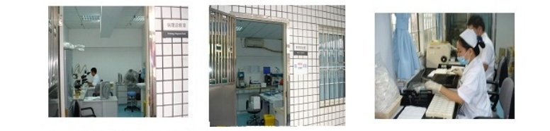

宫颈癌早诊早治中心
北京大学深圳医院于2003年引进国际最先进技术成立了宫颈癌早诊早治中心，其突出特点是集宫颈门诊、专业护理、病毒DNA检验、细胞诊断、阴道镜及宫颈活组织检查、病理制片及诊断、LEEP治疗、病例随访及临床研究为一体的全方位立体中心。由于在宫颈早防早治方面取得突出成绩，于2004年12月被卫生部、中国癌症基金会、广东省卫生厅联合授予“宫颈癌早诊早治示范基地”。
我院宫颈癌早诊早治中心利用国际先进技术进行宫颈病变规范化诊治，截止到2012年12月完成院内机会性宫颈癌筛查21万人次，其中宫颈液基细胞学筛查200,976例、高危型HPV检测111,366 例，实施阴道镜活检18,555 例；诊断低度上皮内瘤变（CIN1）4,108例、宫颈癌前病变（CIN2/3）3,153例、镜下早期浸润癌499例和宫颈浸润癌956例；实施LEEP手术4311 例，宫颈癌根治术900例；建宫颈病变随访档案5,154份。
为探索城市宫颈癌防治的有效途径、早期诊断方法及合理的早期干预措施，在中心顾问专家魏丽惠教授、乔友林教授指导下利用国内外最先进技术，先后完成了世界卫生组织、国家“十一五”课题和卫生部基金项目，在深圳市及周边县市进行了25,000人次以人群为基础的宫颈癌筛查，获得了大量深圳宫颈癌与癌前病变流行病学和发病危险因素的人群数据，为城市宫颈癌防治策略的优化提供了依据。
自2007年与美国国际防癌基金会（Preventive Oncology International, POI）、美国克利夫兰医学中心（Cleveland Clinic）建立协作关系，共同完成了6项代表国际最先进研究水平的宫颈癌防治项目。国际著名宫颈癌防治专家、POI主席、我院客座教授Dr. JL Belinson为项目首席专家，著名妇科病理学家 Dr. Bin Yang为项目首席病理专家。通过执行项目我中心研究人员受到了严格的医疗和病理诊断以及科研技术培训。
作为临床医学院，医院设立了内、外、妇、儿等二级教研室23个，三级教研室27个。年接收北京大学本科、研究生、临床实习生50多名，其他实习、进修人员100多名。现已建立博士后科研工作站1个，博士培养点5个，硕士培养点37个，共有硕士、博士导师76名。现承担10多项国家、省自然科学基金项目，630多项国家、省部、市级科研课题，并获得多项国家、省、市科技成果和国家专利。
2008年开始的“深圳宫颈癌筛查（SHENCCAST）”国际合作项目采用宫颈脱落细胞的液基细胞学检测（TCT计算机自动扫描阅片）、HC 2法HPV-DNA检测、HPV-DNA亚型分析，对12,000例年龄为25岁至59岁、有过性生活、3年以上没参加过宫颈癌筛查的妇女进行筛查，并分别评价Aptima HPV、Cervista HPV、MALDI TOF HPV分型检测效率及自取样本HPV检测的价值。在上述研究的基础上，于2011年本中心又与POI和华大基因研究院三方合作开展了“中国癌症预防研究——以自取样样本的型特异性高危HPV检测为筛查方案采用社区参与性工作模型进行的大人群子宫颈癌筛查项目”，在广东省鹤洲市万例人群实施了“自取样本、FTA卡固体转运、HPV亚型检测”的宫颈癌筛查，项目方案同时在墨西哥实施，取得良好的效果，为建立新型宫颈癌防治模式打下了良好的基础。
设施及人员
中心培养了博士生2人、硕士研究生12人。在临床与研究工作中积累丰富的经验，培养了一批技术骨干，形成一个训练有素的良好的研究团队。
Photo Credit: Unsplash